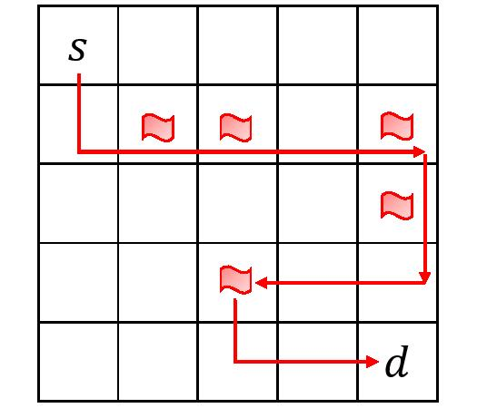
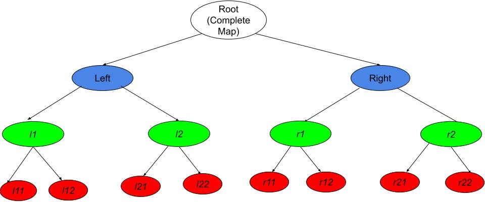
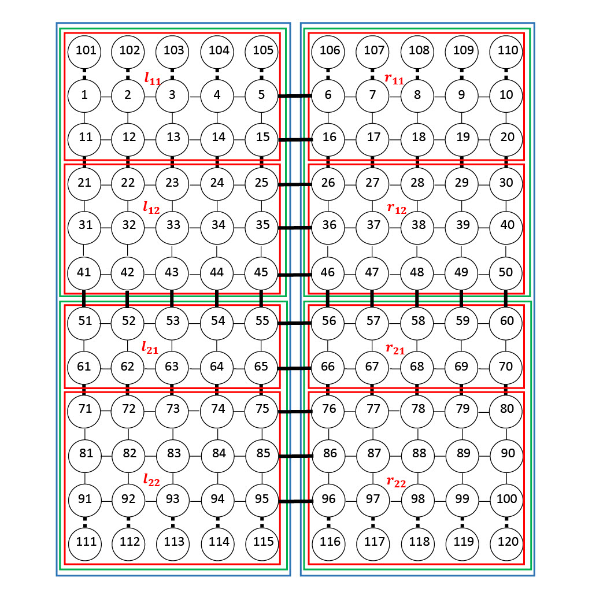

Knowledge Compilation with RL
Code for the paper Integrating Knowledge Compilation with Reinforcement Learning for Routes published at the 31st International Conference on Automated Planning and Scheduling (ICAPS) 2021.
Getting Started
Minimum prerequisites
To install prerequisites in bash
bash install.sh
It is recommended to install all the dependencies in a conda environment.
Or install the following list of packages one-by-one manually (using pip).
For the training code:
- Python 3 (>=3.6)
- Tensorflow (1.7)
- Numpy (1.13)
- Scipy (1.3)
- Pathos
- Networkx (>=2.4)
For generating and manipulating SDDs:
Running the code
To start the training process with default parameters and settings, run
python DCRL.py
in the kcrl/PythonScripts folder
Examples

Consider a 5x5 open grid map with 5 landmarks indicated as flags. Use the default parameters to train the agent for this setting.
To test another setting, you will need to generate your own sdd/psdd and convert the sdd/psdd into intermediate json files using pypsdd/sdd2json.py script.
Steps to generate an sdd for an open grid 5x5 map
- Using Graphillion generate sets of all paths i.e. a GraphSet or a zdd (e.g., using ./scripts/grid.py).
- Construct a file that maps sdd variables (literals) to edges (e.g., using ./scripts/grid.py).
- Convert the above generated zdd into sdd using zdd2sdd script.
python zdd2sdd.py 5x5_icaps.zdd
Add constraints
- To add constraints (e.g., visiting some landmarks), generate another sdd using PySDD. (E.g., use the script landmarks_constraint.py)
- To combine the main sdd (sdd1) with the constraint sdd (sdd2), conjoin them using the conjoin operation in PySDD. (E.g.,
sdd1.conjoin(sdd2))
Large Maps Overview
To generate and manipulate decision diagrams for large maps (e.g. 10x10, 20x20), we used hierarchical clustering as defined in the papers Tractability in Structured Probability Spaces and Structured Bayesian Networks: From Inference to Learning with Routes, and implemented in the C++ package top-down compiler for binary hierarchical map. To multiply such decision diagrams we used the PSDD C++ package. We also use the PyPSDD code to generate some input files for the training code. (PyPSDD is also included in this repo).
- Install the packages: top-down compiler for binary hierarchical map and PSDD. (Installation tested on Ubuntu 18.04 x86_64)
- Constructing Decision Diagrams:
- Construct a psdd for a hierarchically clustered map by following the instructions in the hierarchical map compiler package. Example hierarchical json map files are provided in the
Datafolder. - For constraints, construct an sdd using the PySDD package as described above.
- Construct a psdd for a hierarchically clustered map by following the instructions in the hierarchical map compiler package. Example hierarchical json map files are provided in the
- Combine (P)SDDs using the multiplication operation provided in the PSDD C++ package to generate the final decision diagram. (You can use
scripts/paths_psdd_mult.cppwhich is also provided in thepsdd-1repo. You can also convert the constraint SDD to PSDD in the mutliplication script itself.). - Generate the intermediate json files using
pypsdd/sdd2json.pyand use these files to run the training code.
Generating a psdd for a 10x10 open grid using binary hierarchical clustering


- Create a json file that has all the information about the map and clusters. Here's an example for 10x10 corresponding to the above figure.
- We add extra nodes (super nodes; 101-120) for all the source and destination nodes to use them as evidence in our inference method.
- Create an empty directory
tmp_dirfor temporary files. Input the json file to the hierarchical map compiler to get the output psdd.
./hmc_main <path to 10x10.json> ../script/compile_graph.py tmp_dir <thread_num> <ourput_psdd_filename> <output_vtree_filename>
- The output psdd will encode paths between all pairs of nodes with binary hierarchical clustering. You will also get a file that maps edge names to psdd variables (literls)
edge_var_map.txt.
Adding constraints
Landmarks constraints: Visit each of the landmarks before reaching the destination. We construct these constraints using the PySDD package. More details in the paper.
- To add landmarks constraints, use
scripts/landmarks_constraints.py. In the code, you'll need to change the edge var file and the vtree file to the files that you got in the previous step. According change the json map file. - Specify your landmarks in the
landmarkslist. - Run the code (python3)
python landmarks_constraints.pyto get the sdd for landmarks constraints.
Combining the main psdd with the constraint sdd
We can multiply two psdds, one sdd and a psdd, or two sdds using the psdd C++ package. We need to convert all sdds to psdds to perform multiplication. Use scripts/paths_psdd_mult.cpp file to execute this operation.
- Change the vtree, sdd, and psdd file paths in the code.
- All the sdds should be converted into psdds using
ConvertSddToPsddmethod inPsddManagerclass. Change the name of the output file appropriately. - Run the code.
g++ -no-pie paths_psdd_mult.cpp src/psdd_manager.cpp src/psdd_node.cpp src/psdd_parameter.cpp src/psdd_unique_table.cpp src/random_double_generator.cpp -Iinclude -Llib/linux -lsdd -lgmp
- The final output psdd is a combination (multiplication) of the main psdd and the constraint sdd.
Use this final psdd to construct the intermediate json files using sdd2json.py and run the training code.